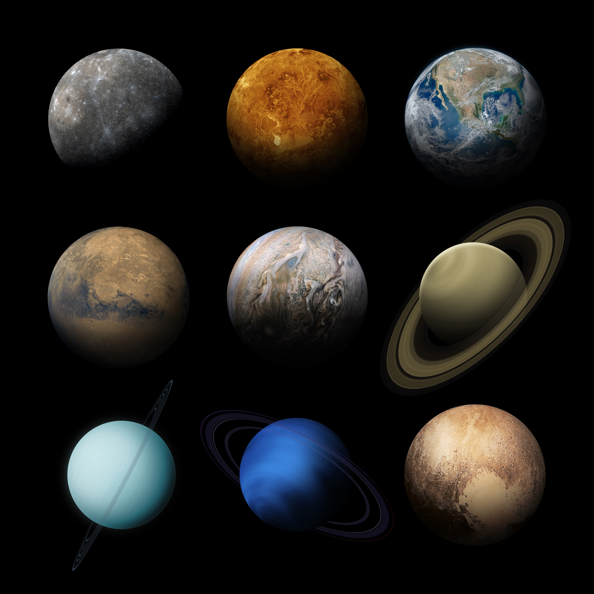
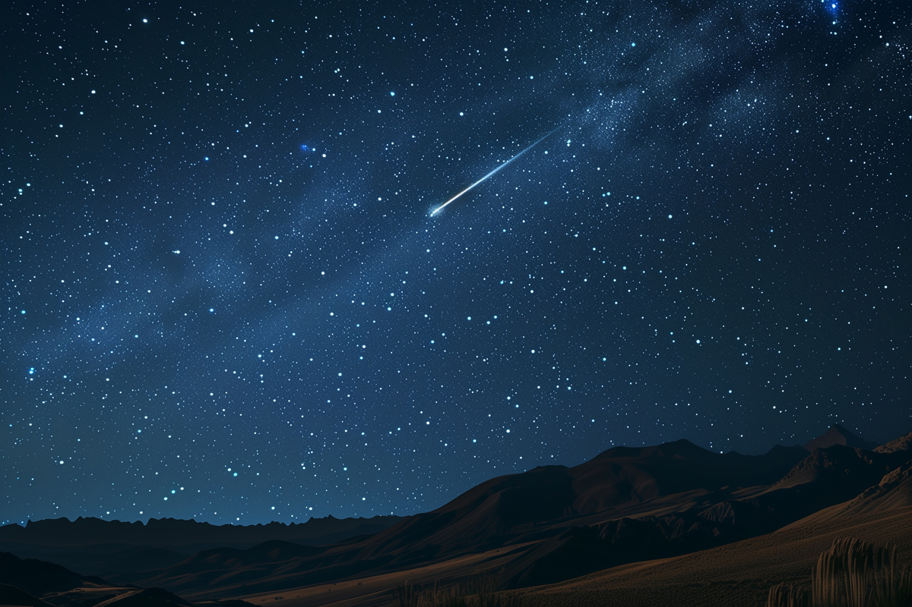
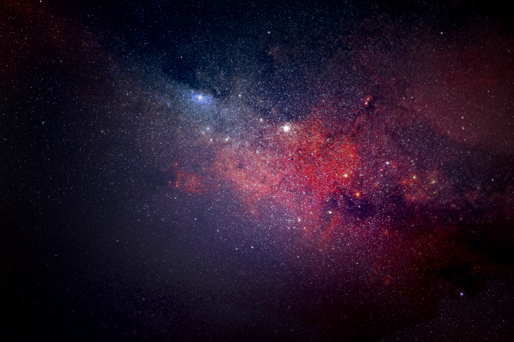

Planets
A celestial body moving in an elliptical orbit around a star.
Stars
A fixed luminous point in the night sky which is a large, remote incandescent body like the sun.
Galaxies
A system of millions or billions of stars, together with gas and dust, held together by gravitational attraction.